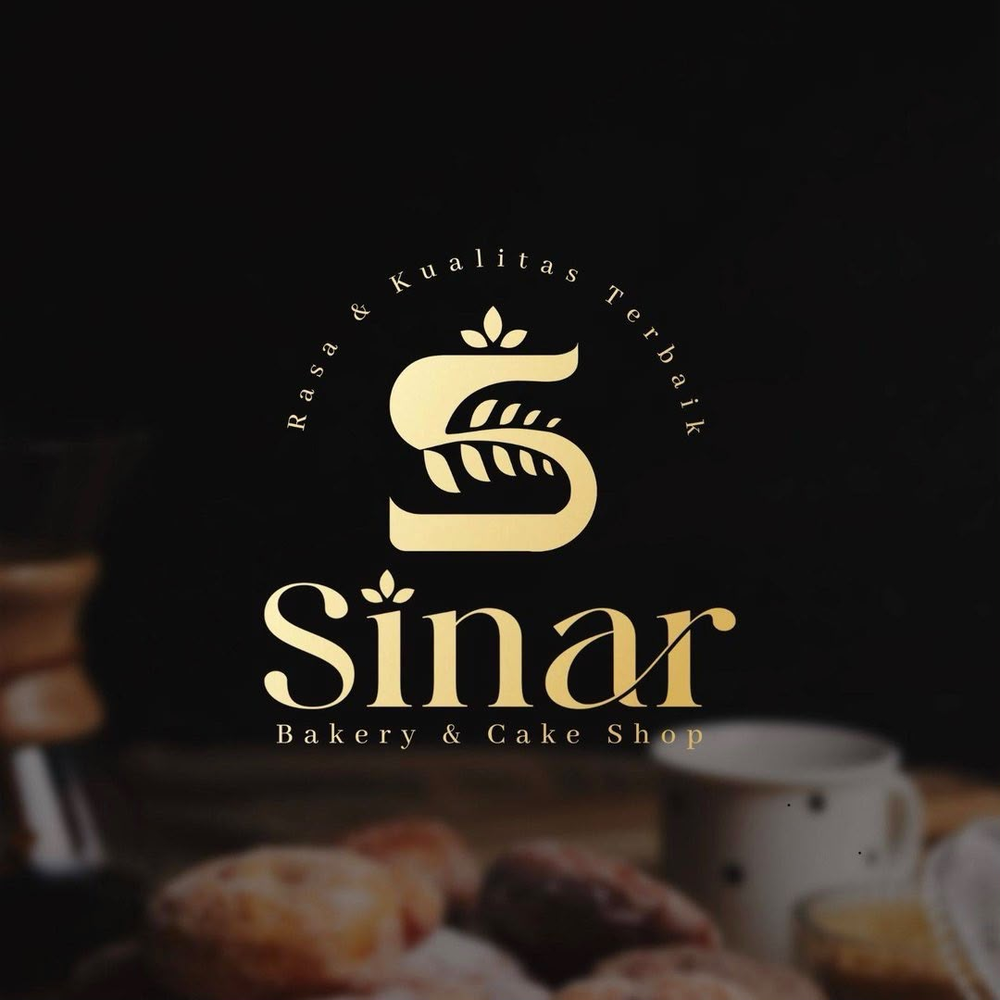

Sinar Bakery adalah toko roti dan kue yang menyediakan berbagai produk berkualitas dengan rasa yang lezat dan harga terjangkau. Kami selalu menggunakan bahan pilihan dan menjaga kualitas produk agar tetap segar setiap hari. Kepuasan pelanggan merupakan prioritas utama kami.
✓ Bahan berkualitas dan higienis
✓ Harga terjangkau
✓ Roti selalu fresh setiap hari
✓ Banyak pilihan rasa dan produk
✓ Pelayanan cepat dan ramah
⭐⭐⭐⭐⭐ "Rotinya sangat lembut dan enak, keluarga saya suka!" - Putri
⭐⭐⭐⭐⭐ "Harga terjangkau dengan kualitas yang bagus." - Rara
⭐⭐⭐⭐⭐ "Donatnya favorit kalangan warga sekitar." - Ulan
"Setiap gigitan menghadirkan kebahagiaan dan kehangatan untuk keluarga."